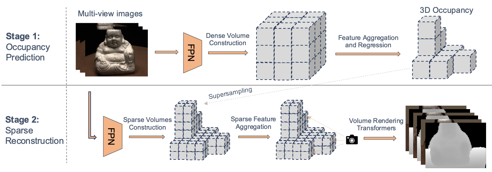
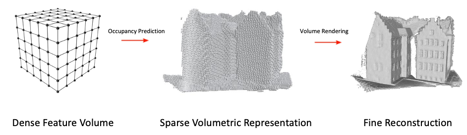
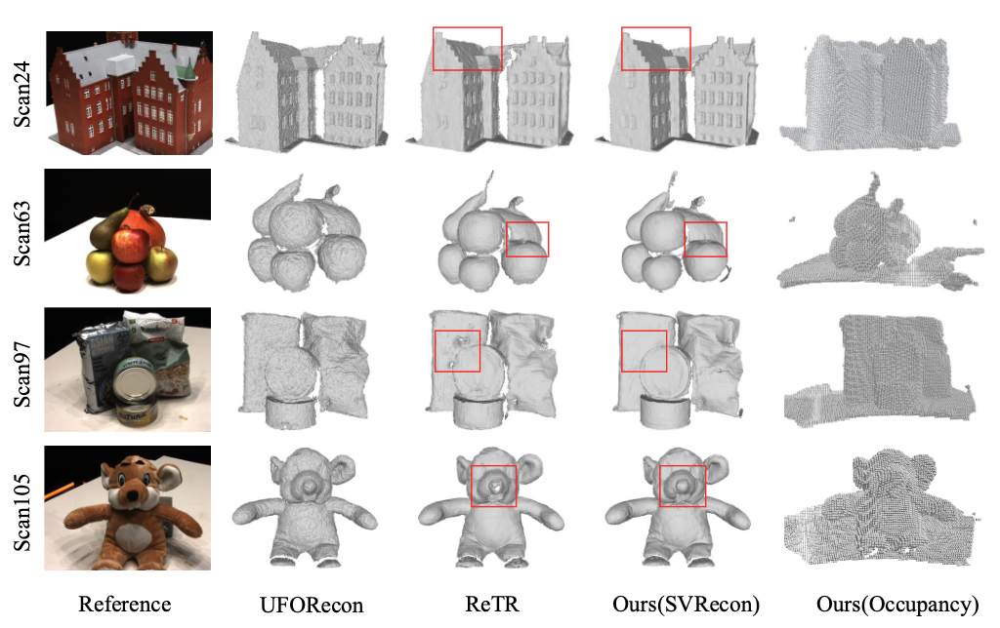
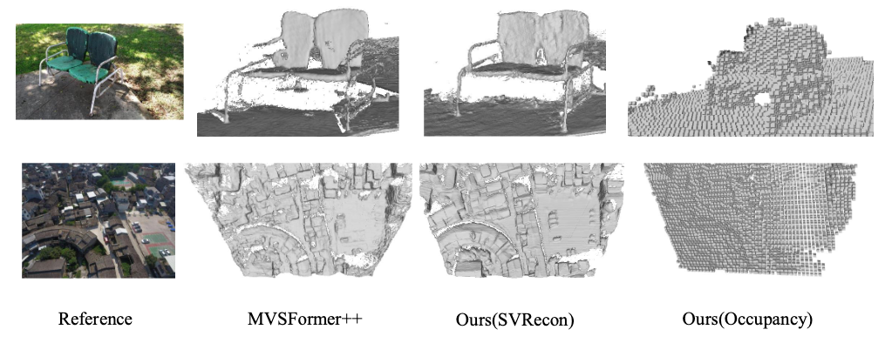

Neural implicit representations have recently achieved impressive results in novel view synthesis and multi-view 3D reconstruction, yet both NeRF- and Gaussian Splatting-based methods require per-scene optimization, which makes them inefficient. Generalizable Neural Surface Reconstruction (GNSR) methods have been proposed to remove this need by learning feature representations directly predicted from input images. However, their typical reliance on dense feature volumes severely limits achievable resolution and fidelity due to prohibitive memory costs. We introduce Sparse Volumetric Reconstruction (SVRecon), a new GNSR framework that unlocks high-resolution, memory-efficient reconstruction through learned occupancy-driven sparsity, in a more effective way than earlier approaches to introducing sparsity in GNSRs. Our approach uses a nested two-stage architecture: (1) an occupancy prediction network that identifies surface-containing voxels, and (2) a high-resolution sparse volume rendering framework defined only within these occupied regions, together with specialized sparsified algorithms for ray sampling, feature aggregation, and querying. This design enables fine-grained surface reconstruction while avoiding the heavy memory footprint of dense grids. SVRecon operates at resolutions up to $512^3$ on standard 32GB hardware—substantially higher than prior generalizable methods—and delivers smoother and more precise reconstructions across diverse datasets, particularly in sparse-view settings.
Framework Overview

SVRecon is a two-stage approach: In the first stage, we train a network to predict 3D occupancy, which is formulated as a classification problem, from the input images at a coarse resolution. e.g. 128^3. In the second stage, we construct a sparse scene representation within only the preserved voxels, at a very high resolution, e.g. 512^3. Generalizable volume rendering are then performed over this sparse scene representation.
Quantitative comparison on DTU dataset against the main baseline

Compared to our main baseline ReTR, SVRecon achieves significantly better results in terms of both Chamfer Distance (CD) and Normal Consistency (NC) on the DTU dataset, demonstrating its superior performance in reconstructing high-fidelity surfaces.
Qualitative comparison on DTU dataset

Qualitative comparison of generalization on Co3D dataset.

Poster
@inproceedings{fan2026svrecon,
author = {Fan, Aoxiang and Dumery, Corentin and Talabot, Nicolas and Xu, Ming and Le, Hieu and Fua, Pascal},
title = {Generalizable Neural Reconstruction of High-Fidelity Surfaces via Sparse Volumetric Representations.},
booktitle = {Proceedings of the European Conference on Computer Vision (ECCV)},
year = {2026}
}{kind=link}